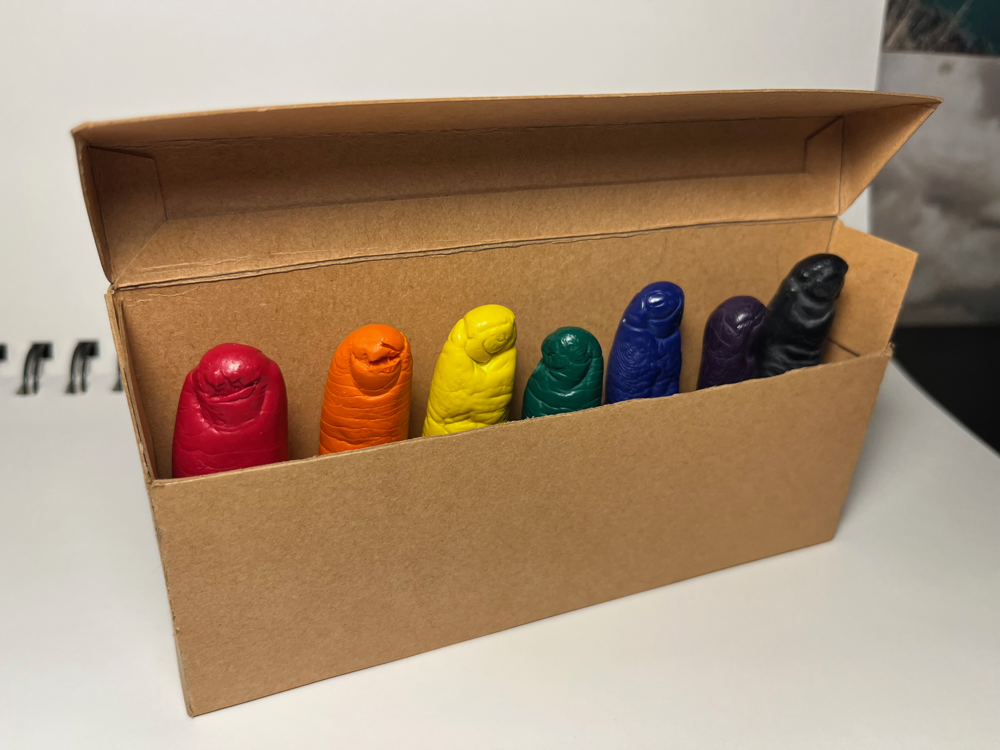

Overview
Standard Crayons is a sculptural set of seven wax casts of human fingers, each rendered in a different color and packaged in a flip-top chipboard box modeled after the classic crayon container. The work literalizes the phrase “art at your fingertips,” uncomfortably highlighting how normalized finger-based creation has become in today’s digital art landscape.
Each cast preserves the unique geometry of a different individual’s finger, introducing subtle variations in scale, texture, and proportion. When arranged together, these differences evoke a morbid sense of dismemberment— an uncanny “boxed set” of body parts that blurs the line between tool and limb. Despite their playful colors, the objects carry an unsettling tension between childlike art materials and the biological reality they mimic.
The casts were produced using alginate molds taken directly from participants’ fingers, which were then filled with melted wax and left to harden. The accompanying box was hand-cut from chipboard and designed to mirror familiar crayon packaging, complete with a flip-top that reveals the colorful tips of each wax finger. By reframing the finger as both medium and instrument, Standard Crayons reflects on how our bodies increasingly function as creative interfaces, challenging viewers to reconsider what counts as a “tool” in contemporary art-making.


Click image to view gallery